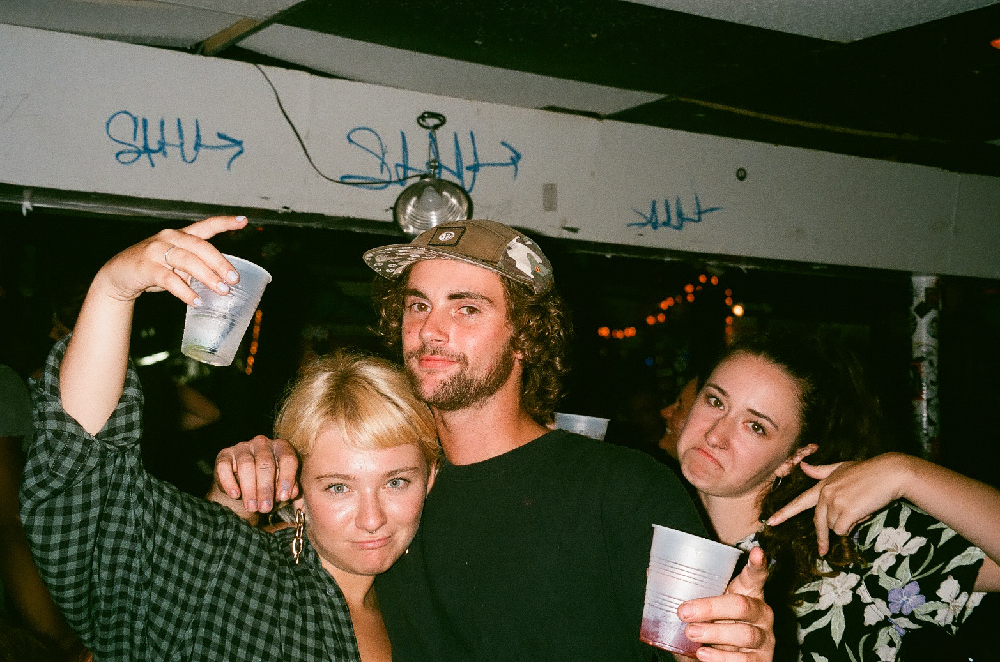
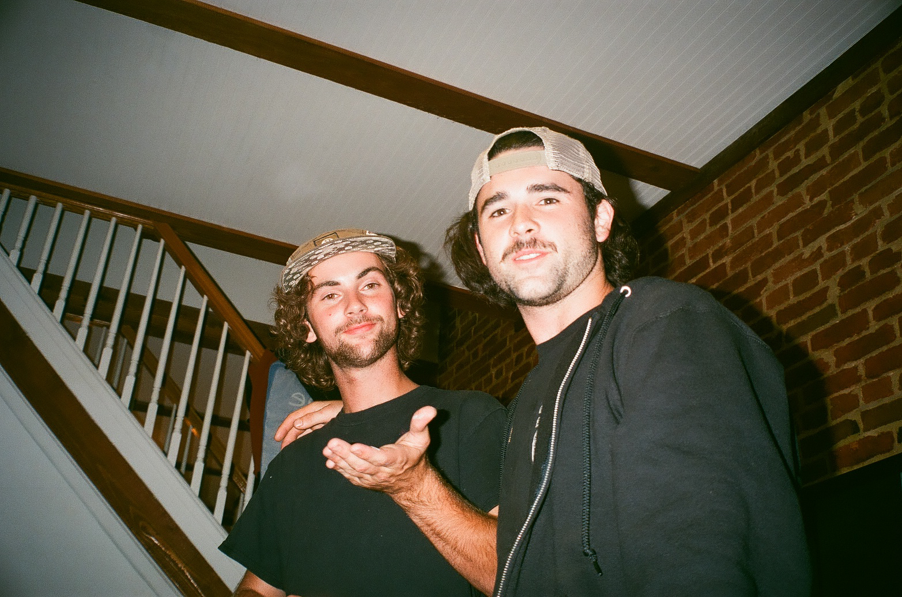
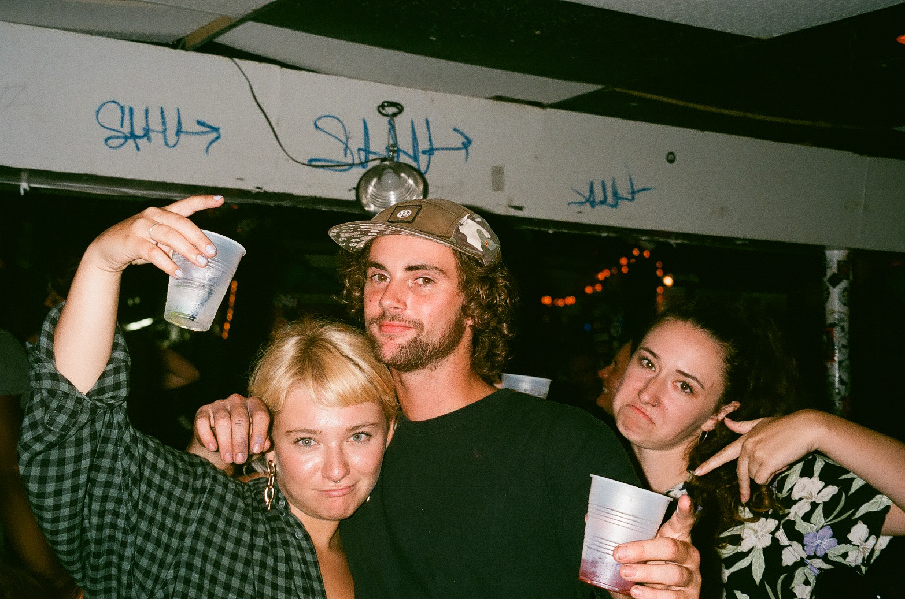
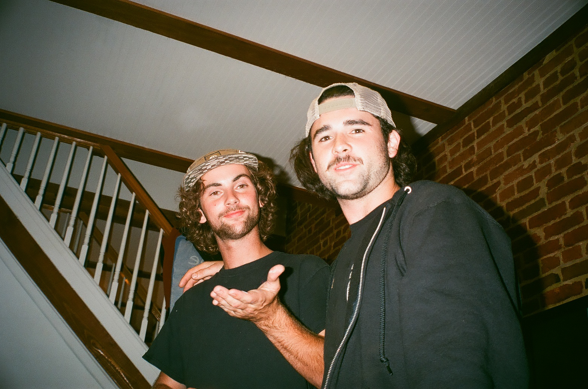
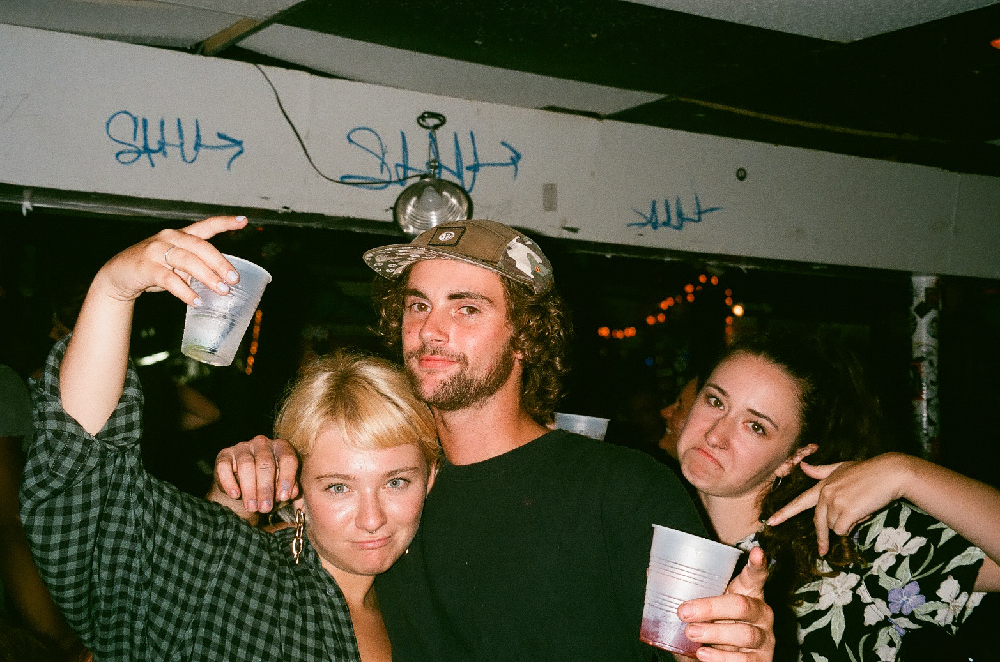
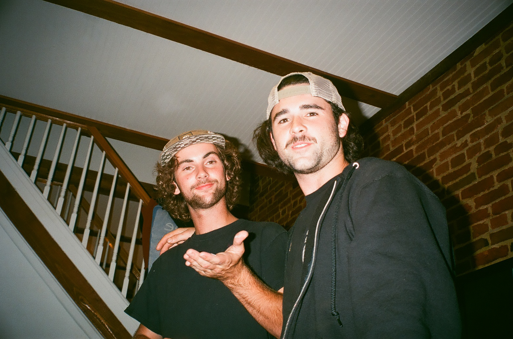

Assuming maybe that it would prepare me for some grand future, immersed fully in the home stretch of 6th grade, I made a fairly rash decision and chose latin as the language I would study for the rest of my public school career. I’m not quite sure what big scheme I was planning for; even at age 11 it was fairly obvious I was not going to become a doctor or a scientist or anything that actually made Latin useful. Maybe I was academically awakened and raring to juice up my brain having just concluded my final quarter of the sixth grade with only three A’s and only one B. The reasoning is hazy, nonetheless I had enrolled myself in Latin for the following semester.
For the next two years, I was trapped in an mildew-smelling classroom covered in kitschy decorations that felt just as old as the langue of Latin itself. Our Latin class included only 9 people, most of which did actually go on to become very reputable doctors and scientists. I think in my graduating class there were two people who scored perfectly on the SATs, and three who scored only 100 below perfect, all of which were in my 7th and 8th grade latin class.
Despite this collection of academic superstars, their intelligence failed to rub off on me as I was easily and very obviously the most mentally inept. I learned virtually nothing in those two years of Latin; I never did my homework, I refused to pay attention and would very consistently instigate verbal fights with my teacher about how ‘Latin is a dead language and only boring people care about it’. While we were meant to go on and continue studying the same language for the next four years of high school, I begged my school districts administration to let me switch to French at the start of 9th grade. I had had enough Latin torture.
After (barely) one year of French, I deemed myself unfit to learn a second language entirely, probably bitter by how behind I now was in comparison to everyone else in my grade, and somehow convinced the same school district people I had been begging the year prior, to let me drop language all together.
The grand future I had been apparently ardently preparing for sort of came and went as I graduated college this past may and despite the idea of big plans, none of them really came to fruition. I spent the summer, May 14th to August 14th, a total of 93 days, working on assorted projects, but mostly, goofing around.
I don’t remember a lot from latin. It hasn’t been even the smallest amount of helpful over the past years, although it may have been if I’d paid attention. What I do remember, is how to sing ‘head, shoulders, knees, and toes’ along very very few disparate latin phrases that are supposedly integrated into the english language.
Obiter Dictum, an expression stolen right from Latin (!), means to say something incidentally. I was taught, or at least I think that I was, that obiter dictum is a commonly used english remark. I’ve never heard anyone say it though and I even asked my mom the other day if she knew what it was. I had to repeat it four times because she couldn’t understand what I was saying and upon the final pronunciation she laughed and said “yeah, I have no idea”. Kind of a bummer that even the things I thought I learned in Latin, turned out to not really teach me anything. In protest of this phrase meaning nothing to anyone, including myself, I’ve switched dictum to sensum, because who is really going to know the difference anyway(dictum meaning to speak and sensum meaning to feel)?
My big 11-year-old plan didn’t go as accordingly and if there was any one way that my summer felt the past 93 days, incidental is probably a pretty good place to start. 93 days of Obiter Sensum catalogs 10 rolls of film that were shot on 3 cameras over the course of the summer. Back to the top.

